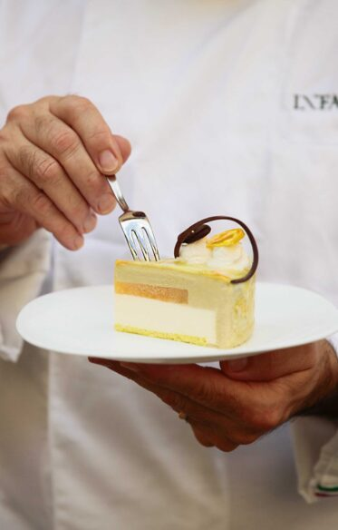
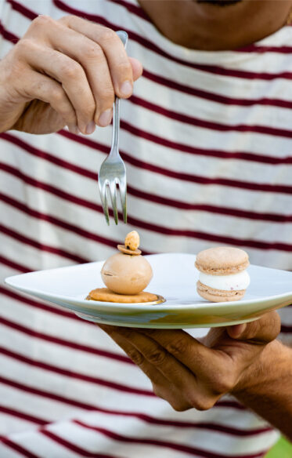
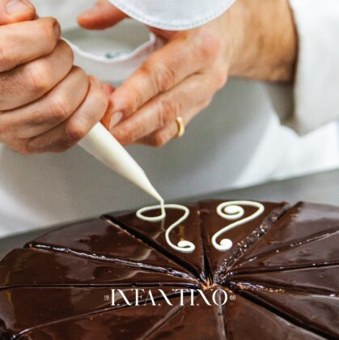

LE STORIE D'AMORE PIÚ BELLE SONO QUELLE CHE NASCONO PER CASO
LE STORIE D'AMORE PIÚ
BELLE SONO QUELLE CHE NASCONO PER CASO. UN GIORNO,
QUANDO MENO TE LO ASPETTI.

LA NOSTRA STORIA
NATI DA UN SOGNO
Il bar del corso Infantino nasce nel 1960 dal
sogno di Salvatore Infantino di creare il suo bar
lungo il corso principale di Palazzolo Acreide,
un suggestivo borgo barocco arroccato sui
monti iblei. L'attività inizia come semplice
caffetteria con la specialità siciliana per
eccellenza il Cannolo. Agli inizi degli anni 80
l'attività allarga i suoi confini insereno nella
scelta dei dolci, nuove proposte, facendola
affermare sempre più come pasticceria oltre
che come bar, questo sfocia in un primo
resturo dei locali per creare spazi di
convivialità per adulti e bambini.


LA PASTICCERIA
Da sempre portiamo avanti la tradizione
artigianale della pasticceria siciliana che negli
anni ci siamo impegnati a rispettare e al
contempo a far evolvere grazie agli
aggiornamenti professionali. All'interno del
nostro locale troverai sempre una persona di
famiglia che ti aiuterà a scegliere i nostri
prodotti, rigorosamente artigianali e creati
con cura.
Scrivici la tua mail, ti terremo sempre aggiornato